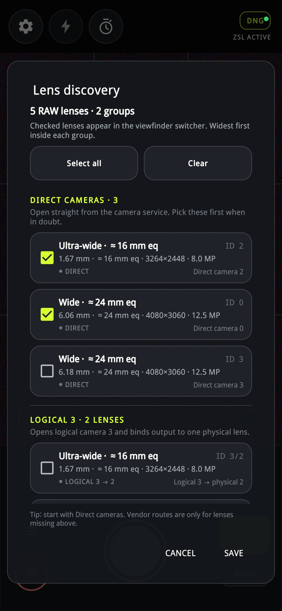
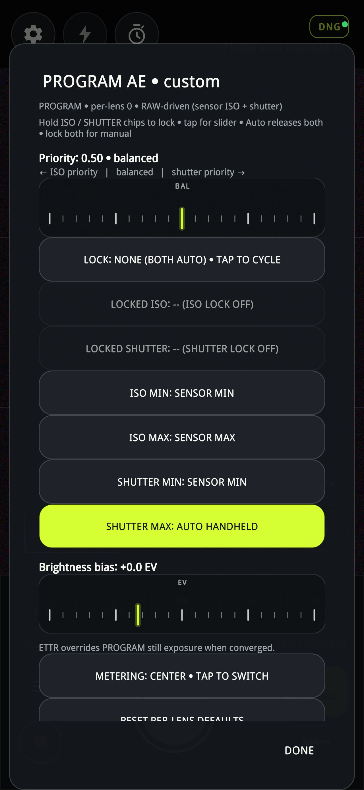
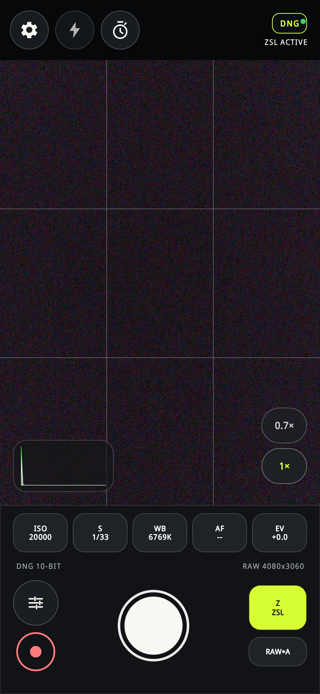

RawLens • User Guide
Photography-first RAW camera for Android. Full-resolution Camera2 RAW_SENSOR → DNG + calibrated AgX JPEG. No gallery, no cloud, no account, no network.
How to read this manual — like a dishwasher manual: 1) find the big picture with red numbered pins ①②③, 2) follow the red arrows ➔ to the table, 3) read “What it does / What to press / What you see”. Every control is explained twice: short label + long detail.
Version: matches app with Settings tabs General / JPEG / Exposure / Burst / Denoise / Lenses / Debug / About. Requires Android 10+, rear camera with REQUEST_AVAILABLE_CAPABILITIES_RAW.
2. ZSL and PROGRAM can never be on together. Turning one on turns the other off.
3. Checked lenses = viewfinder switcher. If you see only
1×, you unchecked 0.7× in Lens discovery. Re-check + SAVE.
- Screenshot map: your 15 images → where they live in this guide
- Chapter 1 — Viewfinder: the whole machine at a glance
- Chapter 2 — Top bar: Settings / Flash / Timer / DNG badge
- Chapter 2B — ★ Capture format: DNG ↔ JPEG ↔ JPEG+DNG (how to switch)
- Chapter 3 — Bottom chips: ISO • S • WB • AF • EV
- Chapter 4 — Shutter, video, mode, RAW badge, lens pills, histogram
- Chapter 5 — Manual ruler panel: LIMITS / AUTO + shutter ruler
- Chapter 6 — PROGRAM AE • custom panel (full editor)
- Chapter 7 — Lens discovery: DIRECT vs LOGICAL vs VENDOR
- Chapter 8 — Settings → JPEG: output + AgX look
- Chapter 9 — Settings → Exposure: HDR, PROGRAM limits, ETTR
- Chapter 10 — General / Burst (ZSL) / Denoise / Debug / About
- Chapter 11 — Recipes: AUTO, PROGRAM, ZSL, MANUAL, HDR, burst
- Chapter 12 — Where photos go + troubleshooting
- Appendix — Defaults, glossary, button-cycling tables
Screenshot map — your 15 images
Save the images you sent in chat as files next to this HTML, then they appear inside the guide automatically. Put them in docs/user-guide/images/ with these names:
| # | Save as | What it shows (from your upload) | Explained in |
|---|---|---|---|
| Image 1 | images/screenshot-01-lens-discovery.png | Lens discovery: 5 RAW lenses • 2 groups, DIRECT CAMERAS • 3, LOGICAL 3 • 2 LENSES | Ch.7 |
| Image 2 | images/screenshot-02-jpeg-adaptive.png | Settings → JPEG (lower half): Preserve hue 0%, Highlight +6.5 EV, Shadow 10.0 EV, Gamut 0%, Adaptive exposure, PROGRAM 50%, headroom 1.00, sky 0.85, shoulder 100% | Ch.8 |
| Image 3 | images/screenshot-03-exposure.png | Settings → Exposure: Lock NONE, Metering CENTER, ISO min/max SENSOR, Shutter min SENSOR MIN / max AUTO HANDHELD, Brightness +0.0 EV, ETTR checkbox, Highlight -0.3 EV, ISO ceiling SENSOR MAX | Ch.9 |
| Image 4 | images/screenshot-04-jpeg-output.png | Settings → JPEG (upper half): JPEG output, Ultra HDR, Display P3, chroma 4:2:2, quality 100%, AgX purity/contrast/saturation 100% | Ch.8 |
| Image 5–9 | images/screenshot-05 … 09.png | Arrived corrupted in chat (white with cyan/magenta/yellow streaks). Please re-export and overwrite these 5 files. Placeholders are kept below. | — |
| Image 10 | images/screenshot-10-program-ae.png | PROGRAM AE • custom: Priority 0.50 balanced, LOCK NONE, LOCKED ISO/SHUTTER --, ISO/SHUTTER MIN/MAX, SHUTTER MAX AUTO HANDHELD, Brightness +0.0 EV, METERING CENTER | Ch.6 |
| Image 11 | images/screenshot-11-manual-slider.png | Viewfinder with manual ruler open: S 1/14, LIMITS + AUTO, ISO 12800, WB 6769K, P PROGRAM, RAW•A | Ch.5 |
| Image 12 | images/screenshot-12-zsl.png | Viewfinder ZSL ACTIVE: 0.7× / 1× pills, ISO 20000, S 1/33, Z ZSL button, RAW•A | Ch.1, Ch.10 |
| Image 13 | images/screenshot-13-auto.png | Viewfinder AUTO AE: same framing, A AUTO button, ISO 20000, S 1/33 | Ch.1 |
| Image 14–15 | images/screenshot-14 … 15.png | Spare slots — use for General tab + Burst/ZSL tab if you capture them later. | Ch.10 |
- Create folder
docs/user-guide/images/(already created for you). - Long-press each image in chat → Save → rename exactly as in the table above.
- Re-open this HTML — images appear. Then Print → Save as PDF to freeze them into the manual.



Chapter 1 — Viewfinder: the whole machine
This is the screen you shoot from (your Images 11–13). Think of it as a dishwasher door: top = program selectors, middle = window, bottom = detergent + start button.
20000
1/33
6769K
--
+0.0
ZSL
- Top-left cluster — ➔ Settings / Flash / Timer. Gear opens all Settings tabs. Lightning = torch/flash. Stopwatch = 2s / 5s self-timer. White icon = ON, grey = OFF.
- Top-right DNG badge — ➔ what will be saved.
DNG●green dot = RAW will save. Sub-line tells AE/ZSL state:AUTO AE/P NONE (both auto)/ZSL ACTIVE/HDR ±2 EV. Tap nothing here — it is a status lamp, like “Rinse aid low”. - Middle window — ➔ framing + tap/drag focus & metering. Thin lines = rule-of-thirds grid. Tap = move AF point, drag = move AE metering target. If you see heavy grain in screenshots, that is a dark room at ISO 20000, not a defect.
- Histogram (bottom-left of preview) — ➔ exposure graph. Left = shadows, right = highlights. Spike glued to left = underexposed dark scene. Tap it to toggle RAW vs preview source. Green edge = RAW source live.
- Lens pills
0.7× / 1×— ➔ switch lens. Lime text = active lens. Only checked lenses from Lens discovery appear. Disappear? Re-check in Ch.7. - Bottom chips ISO/S/WB/AF/EV — ➔ tap = slider, hold = lock (PROGRAM) / manual (others). Full detail in Ch.3.
- Big white button — ➔ shutter (photo). Red-rimmed button below-left = video REC. Sliders icon = quick panel (grid, histogram, metering, HDR, timer, burst, SR, ETTR).
- Mode + format — ➔ exposure program + file type.
A AUTO / P PROGRAM / Z ZSL / M MANUAL.RAW•A= RAW+Auto JPEG. Tap mode to cycle; long-press or quick panel for details.
2. Gear → General → confirm DNG backend + photo folder.
3. Take one daylight photo in AUTO. Check
DCIM/RawLens/<stem> for .DNG + .JPG.If that works, everything else is seasoning.
Chapter 2 — Top bar in detail
| Control | What it does | What you see / hear | Dishwasher analogy |
|---|---|---|---|
| ⚙ Settings | Opens sheet with tabs General / JPEG / Exposure / Burst / Denoise / Lenses / Debug / About. Swipe left/right on empty space flips tabs like book pages. CLOSE dismisses. | Sheet slides up; status toast like JPEG QUALITY • 100%. | Control panel cover — everything behind one door. |
| ⚡ Torch / Flash | Toggles LED torch for preview / capture assist. Not a xenon flash — continuous light. | Icon turns white when on. No effect on RAW exposure math except more light. | Rinse-aid boost. |
| ⏱ Timer | Cycles Off → 2s → 5s. Counts down on shutter, then fires (burst fires full set). | Badge + beep/haptic; shutter disabled during countdown. | Delayed start. |
| DNG badge + sub-line | TAP = switch capture format (see Chapter 2B). Main line: DNG / JPEG / JPEG + DNG (+ green dot = will save). Sub-line: AUTO AE, P NONE (both auto) 0.50 …, ZSL ACTIVE / ZSL … (warming) / ZSL OFF / ZSL N/A (fallback), HDR ±2 EV. | If you expect ZSL but see ZSL N/A, device rejected full-res stream combo — app fell back to normal RAW automatically. Toast after tap: DNG ONLY / JPG / JPG+DNG. | Display: “Eco 50° – 2:10 remaining” — tap = change program. |
Chapter 2B — ★ Capture format: DNG ↔ JPEG ↔ JPEG+DNG
Short answer: tap the top-right DNG / JPEG / JPEG+DNG pill. Each tap cycles one step. This is the dishwasher “program” button — no Settings menu needed.
20000
1/33
6769K
--
+0.0
AUTO
- A Top-right pill = FILE format (what lands in DCIM/RawLens). ➔ Tap
DNG●group to cycle:DNG ONLY → JPEG → JPEG+DNG → DNG ONLY …Toast confirms:DNG ONLY / JPG / JPG+DNG. Green dot = RAW will save. Persisted across restarts. Locked during saving (LOCKED • SAVING— wait 1 s and tap again). - B Bottom-right
RAW•A / JPG•A / RAW / JPG= PREVIEW only (what the screen shows). ➔ Tap to cycleFOLLOW (RAW•A) → RAW → JPG → FOLLOW ….RAW•A= auto-follow the file format (RAW render for DNG, AgX for JPEG). Does not change saved files — pure WYSIWYG switch.
| You want… | Tap A until you see… | Files per press | When to use |
|---|---|---|---|
| Max edit latitude | DNG (green ●) | 1× .DNG only | Default. Lightroom / RawTherapee grading. |
| Share instantly | JPEG | 1× .JPG (developed from RAW via AgX) | Messaging, small storage. JPEG is always developed from the paired RAW frame, never a separate capture. |
| Both (safety) | JPEG + DNG | 1× .DNG + 1× .JPG | Keep RAW master + ready-to-share copy. Burst/ZSL-6 = 6 pairs. |
ZSL note: JPEG/JPEG+DNG selections are bounded to 6 frames for memory; DNG-only can save up to 30. HDR merged mode saves one DNG by default (or 3 if “save all brackets” is on).
JPG toast. 2) Take photo → check DCIM/RawLens/<stem>.jpg (no .dng). 3) Tap twice more → JPG+DNG → photo → you get both. 4) Tap once more → back to DNG ONLY.RAW•A (preview) instead of the top-right pill, or a save is in flight (LOCKED • SAVING). Wait for the shutter to re-enable, then tap the top-right group.Chapter 3 — Bottom chips: ISO • S • WB • AF • EV
Five dark pills above the shutter. Behavior depends on mode — this is the #1 confusion. Memorize this table:
| Chip | In AUTO / ZSL | In PROGRAM (P) | In MANUAL (M) |
|---|---|---|---|
ISO e.g. 12800 / 20000 | Read-only readout of what sensor chose. | Tap = open ISO ruler. Hold = lock ISO (other axis auto-adjusts). Hold second axis = enter MANUAL. | Tap = ruler, drag = set sensor ISO directly. |
S e.g. 1/14 / 1/33 | Readout. Shutter capped by handheld limit. | Tap = shutter ruler. Hold = lock shutter. AUTO HANDHELD = app picks 1/focal-length-safe floor. | Direct shutter control 1/10000 … 1/2 (sensor limits). |
WB 6769K | Auto white balance Kelvin. Tap for slider / presets. | Same. WB never affects RAW pixels, only JPEG development + preview. | Same. |
AF -- | Tap/drag in viewfinder to focus. -- = continuous / inactive in dark test shots. | Same. | Same. |
EV +0.0 | Exposure compensation / brightness bias. Tap for ± slider. | Neutral bias ± EV around PROGRAM target. Disabled in MANUAL. | Disabled (you own both axes). |
DNG 10-BIT RAW 4080×3060Left = DNG bit depth for this lens. Right = active RAW size (here 12.5 MP Wide lens). Changes when you switch 0.7× (8.0 MP, 3264×2448) vs 1×. If it says 0×0, lens failed to open — pick DIRECT lens.
Chapter 4 — Shutter row, lens pills, histogram, quick panel
PROGRAM
- Histogram — tap to toggle RAW ↔ preview source. RAW source = ground truth for ETTR/PROGRAM. If flat-lined left in dark room, add light or raise ISO ceiling — graph is honest.
- Lens pills. Example:
0.7×= Ultra-wide ≈16 mm eq (8 MP),1×= Wide ≈24 mm eq (12.5 MP, lime = active). Names come from Lens discovery. - White shutter = photo. Single press = 1 DNG (+JPEG per RAW•A). In burst/ZSL-6 mode = 6 frames. Red button = video (takes camera exclusively during REC).
- Mode button shows program. Tap to cycle
A→P→Z→M. Color: lime = non-AUTO active (attention!), dark = AUTO. Long text under DNG badge mirrors it. - Sliders button = quick panel. Tiles: GRID, HISTOGRAM, AE METER, HDR, TIMER, RELEASE (single/burst), RAW SR, ETTR. Dual-function AE METER tile: in PROGRAM cycles center/average/spot RAW metering, otherwise hardware AE metering.
Status toasts you will see: ZSL ×6, HDR ±2 EV, AGX PURITY • 100%, PICK A RAW LENS, GPS ON/OFF.
Chapter 5 — Manual ruler panel (your Image 11)
When you tap ISO or S, a ruler slides above the chips. Your Image 11 shows the S (shutter) ruler at 1/14 with LIMITS + AUTO buttons.
| Element in Image 11 | Meaning | What to do |
|---|---|---|
Ruler S 1/14 … 1/10000 … 1/2 | Draggable shutter scale. Green tick = current value. Left = faster (freezes motion, darker), right = slower (brighter, blur risk). | Drag to set. Tap chip again or shutter to confirm. In PROGRAM this sets the locked value / limit. |
LIMITS (dark) | Opens per-lens min/max editor (same as PROGRAM panel / Settings → Exposure). Bounds the AUTO range. | Use to forbid 1/2s handheld or ISO 20000 noise. |
AUTO (lime) | Releases lock on this axis back to auto. Lime = this axis is currently AUTO. | Tap to release. “Auto releases both” in PROGRAM header. |
Top line P NONE (both auto) 0.50 Br… | PROGRAM status: lock mode + priority + brightness bias, truncated. | Mirror of PROGRAM panel — open full editor via LIMITS. |
Chapter 6 — PROGRAM AE • custom (your Image 10)
Full editor. Open via LIMITS, ISO/S chips (hold), or Settings → Exposure. Header in your shot: PROGRAM • per-lens 0 • RAW-driven (sensor ISO + shutter).
| Pin / Row | Control in screenshot | Detailed explanation |
|---|---|---|
| ① | Priority: 0.50 • balanced ← ISO priority | balanced | shutter priority → + BAL ruler | Who moves first when light changes? 0.00 = ISO priority (keep shutter fast, raise ISO → noisier but sharper). 1.00 = shutter priority (keep ISO low, slow shutter → cleaner but blur risk). 0.50 balanced = move both. Damped closed loop glides ~1 stop/s so preview doesn’t jump. |
| ② | LOCK: NONE (BOTH AUTO) • TAP TO CYCLE | Cycles NONE → ISO_LOCK → SHUTTER_LOCK → NONE. Hold-both = MANUAL. On cameras without manual sensor control this is disabled and shows Android AE. |
| ③ | LOCKED ISO: -- (ISO LOCK OFF) / LOCKED SHUTTER: -- | Shows frozen value when locked. -- = off. Seed value = current metered pair when you lock. |
| ④ | ISO MIN: SENSOR MIN / ISO MAX: SENSOR MAX | Tap to cycle allowed bounds (e.g. 100/200/400/800 … 6400). Caps AUTO range per lens. Tighten MAX to forbid ISO 20000 mush. |
| ⑤ | SHUTTER MIN: SENSOR MIN / SHUTTER MAX: AUTO HANDHELD (lime) | Lime highlight = currently selected for editing. AUTO HANDHELD = 1/focal-length-safe floor (e.g. ~1/30–1/60). Tap to cycle fixed speeds or return to AUTO. |
| ⑥ | Brightness bias: +0.0 EV ruler | Neutral trim around PROGRAM target. + = brighter JPEG + higher exposure, – = protect highlights. Disabled in MANUAL. |
| ⑦ | METERING: CENTER • TAP TO SWITCH | RAW metering: CENTER (center-weighted) → AVERAGE (frame average) → SPOT (metering target). In PROGRAM this meters the RAW, not the preview. |
| ⑧ | RESET PER-LENS DEFAULTS + DONE | Reset clears per-lens overrides for this lens only. DONE saves (persisted per Camera2 ID). |
images/screenshot-10-program-ae.png. Priority 0.50 + NONE + CENTER is the sane default — start there.Chapter 7 — Lens discovery (your Image 1)
First-run + Settings → Lenses. Filters Camera2 IDs to rear-facing RAW-capable cameras. Checked = appears as 0.7×/1× pill. Widest first inside each group.
| Row in Image 1 | Meaning |
|---|---|
Header 5 RAW lenses • 2 groups | Found 5 RAW-capable routes in 2 groups. Your phone exposes duplicates (direct + logical). |
Select all / Clear | Bulk check. Don’t Select-all blindly — you’ll get duplicate 24 mm entries. |
DIRECT CAMERAS • 3 — Open straight from camera service. Pick these first when in doubt. | Gold rule. DIRECT = standalone physical camera, most reliable for DNG. Example: Ultra-wide ≈16 mm eq, 1.67 mm, 3264×2448, 8.0 MP, ID 2, DIRECT camera 2 ☑ and Wide ≈24 mm eq, 6.06 mm, 4080×3060, 12.5 MP, ID 0 ☑. |
Unchecked Wide ≈24 mm eq, 6.18 mm, ID 3 ☐ | Duplicate Wide (same 24 mm eq, slightly different physical focal length). Leave unchecked unless ID 0 fails. |
LOGICAL 3 • 2 LENSES — Opens logical camera 3 and binds output to one physical lens. | Vendor logical camera. Example Ultra-wide ID 3/2 ☐ = open logical 3, bind physical 2. Use only for lenses missing under DIRECT. |
Tip start with Direct cameras… | Follow it. Vendor routes are fallback. |
CANCEL / SAVE | SAVE persists set + reloads lenses. Empty set is rejected with PICK A RAW LENS. |
ID 2 Ultra-wide 16 mm + ID 0 Wide 24 mm → SAVE. You get clean 0.7× / 1× pills, no duplicates. Add LOGICAL only if a telephoto is missing.Chapter 8 — Settings → JPEG (your Images 2 + 4)
Two halves of one long scroll. Top = file container, bottom = AgX look + adaptive exposure. All JPEGs are developed from the paired RAW, never separate captures.
8A — Top half (Image 4)
| Control | Detail |
|---|---|
Ultra HDR JPEG (Android 14+ gainmap) ☐ | HDR JPEG with gainmap for HDR displays. Needs Android 14+. Off = SDR via native libjpeg-turbo. Quality slider still applies; chroma then controlled by platform encoder. |
Display P3 JPEG ☐ | Wider gamut than sRGB. Use if your editor/viewer supports P3; otherwise colors look flat elsewhere. |
JPEG chroma subsampling: 4:2:2 | Tap to cycle (e.g. 4:4:4 sharper color / 4:2:0 smaller file). 4:2:2 = balanced default. |
JPEG quality: 100% | 1–100. 100% = largest, least artifacts. 92–95% is visually identical and much smaller — use for bursts. |
AgX purity boost / contrast / saturation 100% | AgX Base look. Purity = color cleanliness at high chroma, Contrast = tone slope, Saturation = color strength. 100% = official base. Lower each if skin tones clip. |
8B — Bottom half (Image 2)
| Control | Detail |
|---|---|
Preserve hue: 0% | 0% = allow hue shifts for filmic rolloff (default AgX). Raise toward 100% to lock hues (more digital, less pastel highlights). |
Highlight range: +6.5 EV / Shadow range: 10.0 EV | How much scene range AgX compresses into JPEG. Bigger = more recovery, flatter mids. Defaults shown are already wide. |
Gamut compression: 0% | Squeezes out-of-gamut colors. Raise if neon signs posterize. |
Adaptive development exposure (AUTO and ZSL) ☑ | Master switch: auto-trim JPEG brightness from RAW stats in AUTO/ZSL. Keep ON unless matching manual exposures frame-to-frame. |
PROGRAM adaptive exposure: 50% | Same trim but for PROGRAM, as strength %. 0% = fixed, 100% = full auto. 50% = half correction — good default. |
Helper Highlights: headroom caps p99.5 spike… | Explains next three knobs: headroom = white-point cap for specular spikes, sky protection = broad p95 skies, shoulder = rolloff into AgX. |
Highlight headroom: 1.00 / Sky protection: 0.85 / Highlight shoulder: 100% | Lower headroom/sky = protect clouds/sky (darker whites). Lower shoulder = harder clip, higher = softer filmic shoulder. Your values are defaults — don’t touch until highlights blow. |
Reset official AgX Base | Restores purity/contrast/saturation/hue to official base (keeps UltraHDR/P3/adaptive + highlight knobs). |
PROGRAM • per-lens limits live under Exposure; RAW DNG calibration under General; overlays, logs, HDR debug under Debug. If you can’t find a knob, you’re on the wrong tab.Chapter 9 — Settings → Exposure (your Image 3)
Top badge in your shot says HDR ±2 EV — HDR bracket mode is on. This tab has three blocks: HDR, PROGRAM limits mirror, ETTR.
| Control in Image 3 | Detail |
|---|---|
Lock: NONE (both auto) | Mirror of PROGRAM lock. Tap to cycle NONE → ISO_LOCK → SHUTTER_LOCK. |
Metering: CENTER | Mirror of PROGRAM metering. Tap: CENTER → AVERAGE → SPOT. |
ISO min: SENSOR MIN / ISO max: SENSOR MAX | Tap to cycle numeric bounds. SENSOR MIN/MAX = full sensor range (widest). Narrow to limit noise (MAX) or force Hi-ISO (MIN). |
Shutter min: SENSOR MIN / Shutter max: AUTO HANDHELD | Same for shutter. AUTO HANDHELD = shake-safe floor. Fix MAX to 1/125 in wind, or allow 1/15 on tripod. |
Brightness bias: +0.0 EV | Same as PROGRAM bias. ± slider, neutral default. |
ETTR single exposure (RAW-measured) ☐ | Expose-To-The-Right: pushes exposure as bright as possible without clipping RAW, from actual sensor stats. When gain ceiling binds, it keeps hand-motion shutter cap and accepts darker frame instead of trading noise for blur. Unchecked in your shot = OFF. Turn on for tripod landscapes, off for people/action. |
Highlight headroom: -0.3 EV | ETTR safety margin. -0.3 = leave 1/3 stop below clip. Tap to cycle 0 / -0.3 / -0.5 / -1.0. More negative = safer highlights, darker image. |
ISO ceiling: SENSOR MAX | ETTR will never exceed this ISO. Lower to cap noise (e.g. 1600). |
HDR: save all 3 brackets as separate DNGs (off = merged single DNG), HDR bracket range −4/0/+4 EV (off = ±2 EV). Merged HDR saves one DNG by default. Debug frames live under Debug tab.Chapter 10 — General / Burst (ZSL) / Denoise / Lenses / Debug / About
General (Images 14–15 slot)
- RAW capture, DNG backend, location, viewfinder. RAW DNG calibration overrides per Camera2 ID (black/white levels, noise profile, color/calibration/forward matrices). Reset = device defaults. Undeclared tags are hidden (no unsafe overrides).
- Viewfinder: GPU superpixel resolution (480/640 full-rate, 960 balanced, 1080 detail), preview mode FOLLOW, overlays shortcut (full controls under Debug).
- Sidecars/photo folder: DNG/JPEG bursts →
DCIM/RawLens/<stem>via MediaStore; gyro sidecars (burst.json + gyro/CSVs) →Download/RawLens/<stem>unless photo folder granted under General → then next to DNGs.
Burst — Zero shutter lag (ZSL)
- Master:
RAW zero shutter lagcheckbox = same as Z mode button. Needs compatible reprocessing or preview+RAW stream; elseZSL N/A → fallback to normal RAWautomatically. - Frame count 1–30 (default 2): ring buffer size. 30 fps × 30 = ~1 s pre-shutter history. JPEG/JPEG+DNG bounded to 6 frames for memory; DNG-only can save all 30.
- Badge language:
RAW•ZSLafter first paired frame,ZSL …warming,ZSL OFFdisabled,ZSL N/Afallback. - Scoring: on press, only fresh frames (readout finished by press instant) scored by recency, AF/AE state, lens movement, ISO, exposure, gyro motion. Request epochs block stale frames.
- Hybrid top-up, RAW SR merge (Linear RGB recommended / Mosaic for RawTherapee), sidecar folder grant. SR forces ZSL on.
Denoise
- AI RAW denoise (RawNIND Bayer): writes denoised DNG + develops JPEG from it. Needs model in assets. Strength 0–100% (blend, no re-run).
Save original DNG alongsideoff = halves storage. - GALOSH Vulkan classical: writes
_GALOSHDNG + JPEG. Wins over AI when both on. Prewarms Vulkan on enable.
Lenses / Debug / About
- Lenses: same as Ch.7 + per-lens RAW DNG calibration link + ISO/shutter bounds link.
- Debug: HDR debug frames, viewfinder overlays (grid/histogram/diagnostics), app logs, logcat file.
- About: license (GPLv3+), privacy (camera permission only, no network), PhotonCamera/TinyDNG attribution.
Chapter 11 — Recipes (tear-out card)
| Goal | Mode + settings | Press … |
|---|---|---|
| Everyday sharp photo | AUTO, DIRECT 1×, Adaptive ON, quality 92% | Tap to focus → white shutter. Check DNG+JPEG pair. |
| Balanced control (street) | P PROGRAM, Priority 0.50, CENTER, ISO MAX 3200, SHUTTER MAX AUTO HANDHELD, bias +0.0 | Hold ISO to lock in sun, AUTO to release indoors. |
| Kids / decisive moment | Z ZSL, frames 6, hybrid top-up ON | Half-wait for ZSL ACTIVE, then shutter. Pick sharpest of 6. |
| Full manual night | M MANUAL, ISO 1600, S 1/30, WB lock, EV n/a | Use histogram: push right without clipping. Tripod → allow 1/4s. |
| Sunset HDR | Exposure tab HDR ±2 EV (or ±4 for harsh), merged DNG | HDR quick tile ON → shutter → one merged DNG. |
| Cleanest landscape | ETTR ON, headroom -0.3, ISO ceiling 1600, tripod | Let ETTR converge (freezes PROGRAM), then fire. |
Chapter 12 — Where photos go + troubleshooting
| Symptom (like dishwasher fault code) | Cause | Fix |
|---|---|---|
| Viewfinder black / noisy (your Images 12–13) | Dark room, ISO 20000, 1/33s. Honest preview. | Add light or test daylight. Raise exposure / check histogram moves right. |
ZSL N/A or no ZSL badge | Device rejected full-res combo / memory budget. | App already fell back to normal RAW — shoot normally. Reduce frame count to 2. |
Only 1×, no 0.7× | Lens unchecked. | Settings → Lenses → check ID 2 → SAVE. |
| PROGRAM feels stuck | ETTR converged and owns exposure. | Exposure tab → uncheck ETTR, or wait for light change. |
| Corrupted streaky images (your Images 5–9) | Upload / export corruption in chat, not camera. | Re-save originals over images/screenshot-05 … 09.png and re-print PDF. |
| No DNG, only JPEG | Capture format = JPEG-only or non-RAW lens. | Set RAW•A, use DIRECT lens with RAW capability. |
| Sidecars missing next to DNG | Android forbids text under DCIM via MediaStore. | General → grant photo folder, or copy burst.json + gyro/ from Downloads next to DNGs before desktop import. |
Files: stills DCIM/RawLens/<stem>.{dng,jpg}, bursts <stem>_000…, sidecars Download/RawLens/<stem>/burst.json + gyro/*.csv (or next to DNGs after folder grant). No gallery in app — open in Files / Lightroom / RawTherapee.
Appendix — Defaults & glossary
Factory defaults (your screenshots match these)
| Setting | Default in shots |
|---|---|
| JPEG quality / chroma / P3 / UltraHDR | 100% / 4:2:2 / off / off |
| AgX purity / contrast / saturation / hue | 100% / 100% / 100% / 0% |
| Highlight / Shadow / Gamut | +6.5 EV / 10.0 EV / 0% |
| Adaptive (AUTO/ZSL) / PROGRAM strength | ON / 50% |
| Headroom / Sky / Shoulder | 1.00 / 0.85 / 100% |
| PROGRAM priority / lock / metering / bias | 0.50 balanced / NONE / CENTER / +0.0 EV |
| ISO/Shutter min/max | SENSOR MIN / SENSOR MAX, Shutter MAX AUTO HANDHELD |
| ETTR / headroom / ceiling | OFF / -0.3 EV / SENSOR MAX |
| ZSL frames | 2 (1–30) |
Glossary (plain words)
RAW_SENSOR / DNG: uncooked sensor data + metadata — edit latitude. AgX: filmic tone mapper for JPEG look. ETTR: shoot as bright as possible without clipping. ZSL: camera remembers pre-press frames. DIRECT vs LOGICAL: real camera vs vendor-combined virtual camera. Gainmap (Ultra HDR): extra brightness layer for HDR screens. P3: wider color box. Chroma subsampling: color resolution squeeze. p99.5 / p95: brightest 0.5% / 5% pixels — used for highlight guards.